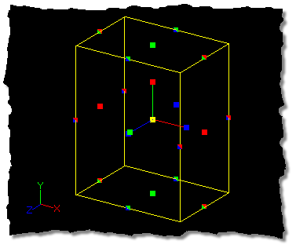
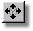

Movement of the selected object is referred to as translation. Freely
translating a selected group of control points can be accomplished with the Standard
Manipulator, but sometimes you will want to limit translation to a single axis.
For example, you may not want the selected object to move along the Y and Z
axis. This is what the translate manipulator controls. Each of the handles along
the edges of the manipulator box correspond in color to the X, Y, and Z axes,
so dragging the handle matching the color of the axis you wish to translate in
will allow the selected points to move only in that axis. Those handles with
more than one color will move the selected object in both axes that match the
color code of the handle. The axis that the handle will move along is also list
on the Status Bar.
In the above image, dragging the red handles on either side of the manipulator
box would move the box along the X axis only, while dragging the green handles
on the top and bottom of the box would translate only along the Y axis.
Dragging the box by the red and green handles will translate only in an XY plane, and
so on.
In the translate column on the Properties Panel, the coordinates will be
printed in their appropriate fields. Values can also be entered directly into these
fields on the Properties Panel with the keyboard.
When working with a single point, it is sometimes useful to move the control
point along only one axis, an operation that would be very difficult with the
Translate Manipulator. When a single point is selected, holding down either the
1, 2, or 3 key on the keyboard will restrict the control points movement to the
X, Y, or Z axis, respectively. Holding down more than one of the keys while
translating an object will force the translation to be in the selected axes ( “X”,
“Y”, or “Z”, respectively). If you are in a Bird’s Eye view or Camera view in
a Choreography window, Translation will normally occur in the “X” and “Z” axis
only. If you wish to move the object in all three axes then you can hold down
all three keys.
The Translate Manipulator also allows pivot movement by dragging the pivot
handles with the mouse. This is to allow repositioning of the pivot for lathing,
scaling, etc.
The default keyboard shortcut key for the Translate Manipulator is N. Pressing
N will switch the Standard Manipulator to the Translate Manipulator, and
pressing N a second time (or pressing the Esc key) will switch the Translate
Manipulator back to the Standard Manipulator.
Related Topics:
Scale Manipulator Mode
Rotate Manipulator Mode